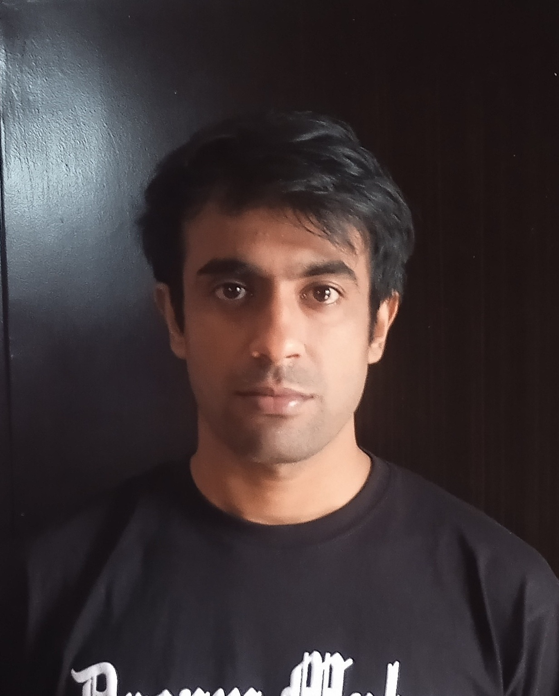

Composition, memory & pruning
in neural networks.

I am a PhD student working on theoretical machine learning, with a focus on composition, memory, and pruning in neural networks.
Based in Nice, France, I am affiliated with COATI, 3IA Côte d'Azur, Inria, I3S, CNRS, and Université Côte d'Azur, under the supervision of Prof. Emanuele Natale. My work studies the mathematical principles behind model composition, sequence memory, and neural network pruning.
Prior to this, I completed my BS-MS in Physics at IISER Kolkata, grounding my intuitions in the physical principles that govern complex systems.
Can sparse subnetworks inside large, randomly initialized models already perform well — before any training? I develop theoretical frameworks connecting pruning and quantization in these regimes.
How can neural systems combine specialized behaviors without interference? I study principled frameworks for composing autoregressive models via logit composition, with guarantees on stability.
Classical asymmetric Hopfield networks can support a superpolynomial number of stable limit cycles with very large periods — far beyond what was previously understood.
Team COATI. Advisor: Emanuele Natale. Focus on the theory of neural network pruning, composition, and memory.
Thesis: "Phase transition in Artificial Neural Networks".
Teaching Assistant for Mathematical Methods I.
Open to discussion, collaboration, and scientific conversation.
Reach out about research, ideas, or anything related to theoretical machine learning.